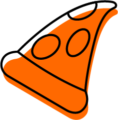
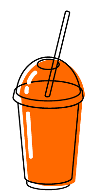
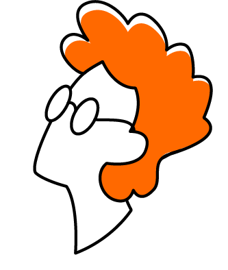
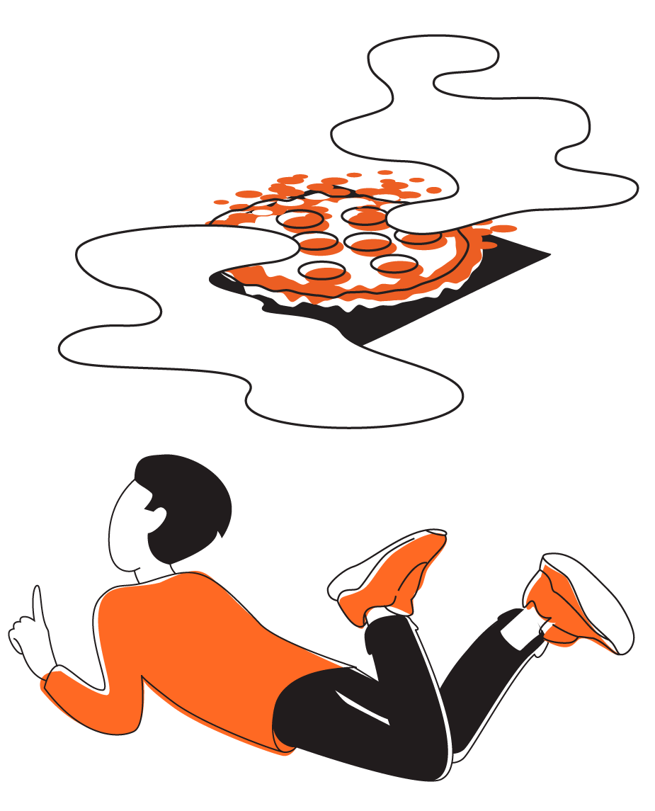
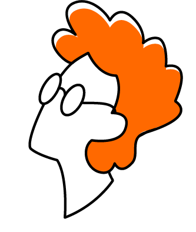
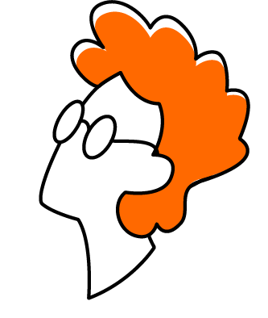
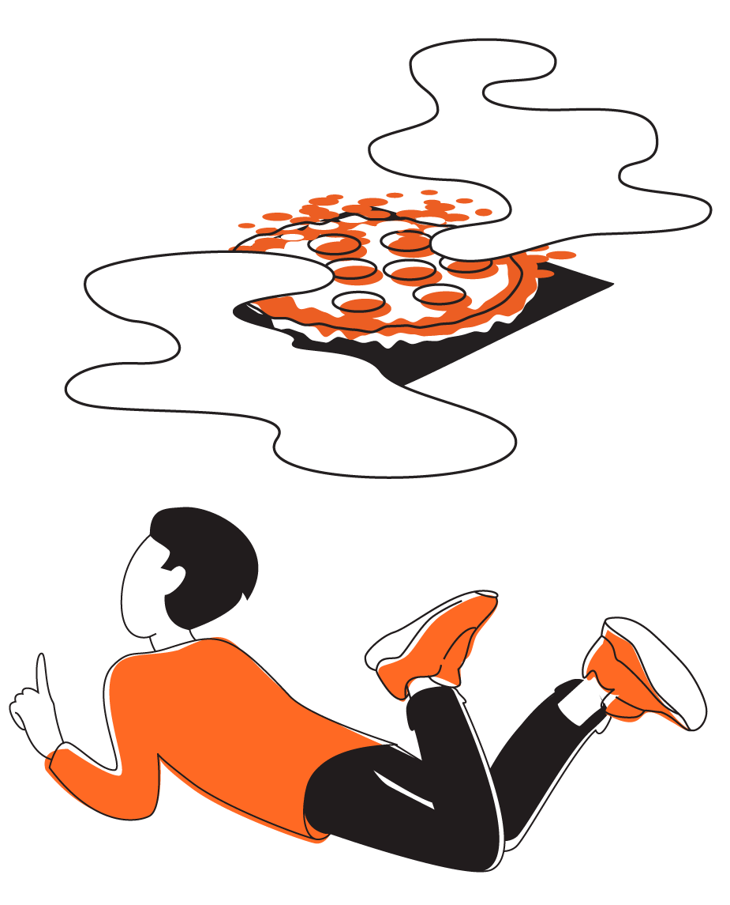
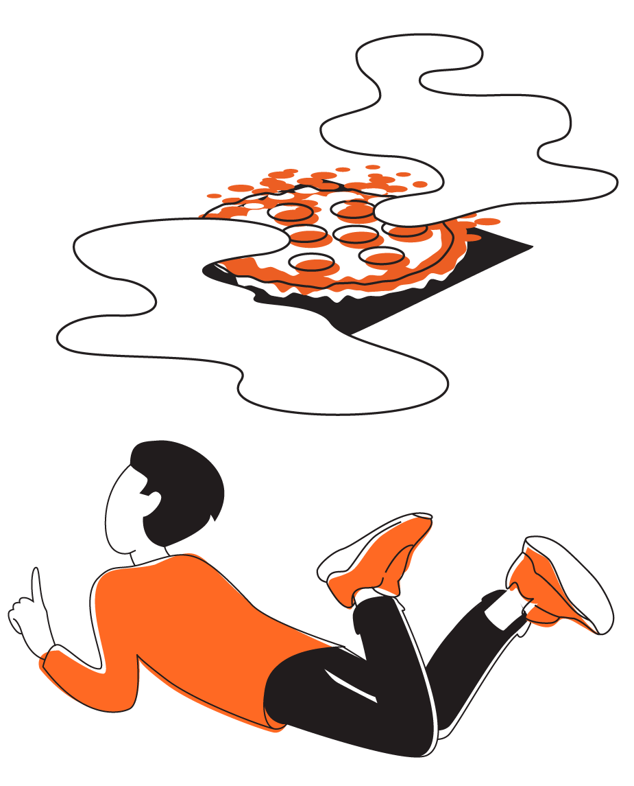

Мы видим, что мир становится всё более закрытым и разрозненным. Люди меньше доверяют друг другу, и особенно люди меньше доверяют бизнесам. Потребительские ожидания снижаются: «пусть будет быстро и приемлемо, остальное неважно». Людям всё чаще бывает всё равно.
Мы несём культуру доверия и открытости. Мы повышаем ожидания и вовлекаем в новый потребительский опыт.
Делаем пиццу, чтобы открыть мир
Мы хотим сделать весь мир более открытым, а в процессе — открыть его для себя.
Логотип
В большинстве случаев этот логотип — единственный, который вам потребуется для верстки макетов.
Подпись к картинке
Текстовый логотип
На узких, маленьких носителях размещайте текстовый логотип: например, на ручках и карандашах или на упаковке порционного сахара.
Он черного цвета на белом и светлых фонах, белый на черном, оранжевом и темных фонах.
Подпись к картинке
Логотипы-иконки
Логотип-знак в форме буквы D практически не использует отдельно от текстовой части логотипа, тем не менее его можно найти на макетах для соцсетей.
Круглый логотип — это картинка-аватар для аккаунтов в соцсетях.
Логотипы на фоне
Белый — основной фон.
Черный фон тоже допустим.
А на оранжевом фоне используйте белый текстовый логотип без знака.
Свободное поле вокруг логотипа
Оставляйте свободное поле вокруг логотипа. Минимальное значение равно букве «О».
Следите за тем, чтобы между заголовком и основным текстом был достаточный контраст кеглей. Например, если основной текст набран кеглем в 12 пунктов, заголовок должен быть больше примерно на 165%, т. е. 19–20 пунктов.
Цвет
The Holy Trinity
Наши цвета — оранжевый, белый и черный.
Оранжевый
Белый
Черный
Главный цветовой идентификатор бренда.
В случаях, когда мы хотим сообщить, что это — мы, заливаем носитель оранжевым.
Отражает чистоту и открытость — принципы компании.
Идеален для базового текста.
Дисплейные цвета
Оранжевый
Белый
Черный
RGB 255 105 0
HEX #FF6900
RGB 255 255 255
HEX #FFFFFF
RGB 0 0 0
HEX #000000
Печатные цвета
Оранжевый
Белый
Черный
CMYK 0 75 95 0
Pantone 1505 U
Oracal (641/8300/8500 Series) 034 Orange
CMYK 0 0 0 0
White
Oracal (641/8300/8500 Series) 010 White
CMYK 0 0 0 100
Black
Oracal (641/8300/8500 Series) 070 Black
Дополнительные цвета
В основном мы используем дополнительные цвета для кодирования продуктов в меню: мясные продукты и продукты без мяса, холодные и горячие напитки, десерты и салаты.
Мы также кодируем продуктовые семейства (группы, категории). Эти цвета должны подчеркивать (выделять, пояснять) вкус или настроение продукта (например, розовый цвет семейства продуктов на основе мороженого или розово-серые цвета для пасты).
описание дополнительных цветов и правила их использования
ВКОД+
Додо Пицца — многоуровневый бренд. У нас несколько пересекающихся аудиторий, ключевых идей и контекстов взаимодействия. Что и как мы говорим, зависит от ситуации и опирается на ценности, наиболее релевантные контексту. А ценности, характер бренда и интонация — неизменные.
В чём смысл
Как проявляется
Кому это важно
В
Вкус
Первая оценка, которую мы получаем от нового клиента: вкусно или нет.
Потом мы сможем многое ему предложить сверх этого, но вкус — это базовая ценность, за которой к нам приходят и ради которой возвращаются.
Вкус — это важно.
Заморачиваемся с ингредиентами. Тщательно выбираем поставщиков. Не экономим на начинке.
Заморачиваемся с режимом хранения ингредиентов, перекладываем с полки на полку, безжалостно выбрасываем просроченное.
Заморачиваемся с тестом. Тщательно подбираем ингредиенты. Совершенствуем рецептуру. Проходим квест из граммов, градусов, процентов и часов с минутами. Строим производственно-распределительные центры, чтобы делать тесто в более предсказуемых условиях, чтобы с увеличением объёмов не снижалось качество.
Продаём только свежую пиццу. В доставке укладываемся в среднем за 34 минуты. На витрине продаём кусочки только час, потом безжалостно выбрасываем.
Заморачиваемся с кофе. Выбираем стопроцентную арабику, контролируем обжарку, режим хранения, используем только высокотехнологичные кофемашины.
Всем-всем-всем, включая случайных людей
В чём смысл
Как проявляется
Кому это важно
К
Качество
Наш продукт — не только пицца.
Кроме пиццы, у нас покупают доставку как услугу и пиццерию как место, где можно провести время. И ещё у нас покупают бренд — как обещание качества.
От качества доставки и пиццерии зависят продажи пиццы.
Качество — это важно.
Качественная пицца. Это значит: вкусная и свежая.
Качественное меню. Это значит: есть блюда на любой вкус, они всегда в наличии.
Качественный заказ. Это значит: удобный сайт и мобильное приложение, минимальное количество действий, удобные способы оплаты, контроль статуса доставки.
Качественная доставка. Это значит: быстро, вежливо, приветливо, чётко.
Качественная пиццерия. Это значит: чисто, уютно, есть места для разных компаний, кассиры приветливые и толковые, не надо долго ждать, есть чем занять детей.
Стандарты. Все наши критерии качества во всех проявлениях зафиксированы в виде инструкций и стандартов.
Додо ИС. Даёт исчерпывающую информацию, позволяет своевременно принимать меры, видеть проблемы, искать решения.
Нашей широкой аудитории — людям, которым не всё равно
В чём смысл
Как проявляется
Кому это важно
О
Открытость
Для нас это:
Мировозрение. Мы считаем, что открытость делает мир лучше. Открываться — значит доверять людям, верить в их лучшие намерения.
Внутренняя потребность. Мы не боимся критики, у нас нет паранойи и скованности. Мы хотим делиться.
Стиль в коммуникации. Мы не прячем фейлы и рассказываем интересные подробности, это подкупает и формирует доверие.
Инструмент контроля качества. У нас всё на виду, и каждый может проверить соблюдение стандартов.
Драйвер улучшений. Благодаря открытости мы постоянно получаем подсказки и внешние стимулы.
Открытость — это важно.
Открытая кухня
Стеклянные стены. Нет потайных уголков, весь процесс всегда перед глазами.
Экскурсии. Регулярно одеваем детей и взрослых в халаты и шапочки, чтобы показать всё изнутри.
Веб-камеры. Каждая кухня непрерывно транслирует картинку с нескольких камер прямо на наш сайт.
Публичный контроль
Тайные покупатели. Не профессиональные наёмники, а специальный клуб, собранный из наших клиентов. Их тысячи и они неподкупны.
Инспекторы чистоты. Выбираем их из числа тайных покупателей и наделяем особыми полномочиями. Самые строгие ребята.
Рейтинг. По результатам проверок каждую неделю обновляется рейтинг пиццерий. Его видят все партнёры. За низкий рейтинг можно лишиться франшизы.
Прозрачный бизнес
День директора. В праздничные дни наши директора становятся за кассы, чтобы помочь коллегам и заодно лучше понять клиентов.
Онлайн-трансляции еженедельных встреч. Каждый понедельник мы начинаем с трёх коротких докладов о новостях, результатах и планах. Всё сразу же появляется в открытом доступе.
Публикация финансовой отчётности. Честно публикуем цифры. Прибыль, убытки, поражения, победы, всё как есть.
Ядру нашей аудитории, додо-пипл. И фан-клубу предпринимателей.
В чём смысл
Как проявляется
Кому это важно
Д
Доверие
Для нас это:
Осознание силы. Мы не боимся доверять, потому что уверены в себе, своих делах, продуктах и взгляде на мир. Мы не одержимы контролем, потому что у нас есть запас прочности. Мы не строим стены, а расширяем границы комфорта.
Способ вести диалог с миром. Нам интересен мир во всей полноте. Мы не хотим диктовать правила, мы хотим одновременно и влиять, и учиться.
Видение будущего. Мы играем в долгую. Мы считаем, что в долгосрочной перспективе доверие — это весомое рыночное преимущество.
Доверие — это важно.
Доверяем клиентам
Например, когда обещаем доставку за час или бесплатную пиццу — успели мы или нет решает клиент, мы верим на слово.
Скидку в день рождения тоже даём без документов.
Если клиент случайно разлил кофе, мы без вопросов сделаем новый бесплатно.
Если поступает жалоба, мы не сомневаемся, а бежим исправлять.
Доверяем партнёрам
Новому партнёру открываем доступ к информации безо всяких НДА и платежей.
Доверяем мнению и видению партнёров — новые форматы, нестандартные ситуации, новые продукты, поддерживаем инициативу.
Доверяем миру
Рассказываем всё как есть. Признаём уязвимости, и верим, что никто специально не желает нам зла. Внимательно слушаем критику.
В первую очередь нашему ядру, додо-пипл. И всем остальным аудиториям тоже.
В чём смысл
Как проявляется
Кому это важно
+
Комьюнити
В конечном счёте открытость и доверие нужны, чтобы объединять людей.
Мы создаём среду, в которой люди будут менее безразличными и разрозненными, более открытыми и связанными.
Комьюнити — это самое важное.
Объединяющий продукт
Пиццу редко заказывают для одного, чаще для двоих или для компании.
Объединяющее место
В пиццерию часто приходят вдвоём или компаниями. Именно в наших пиццериях часто возникает атмосфера, располагающая к знакомствам. Но можно и не знакомиться, а просто побыть рядом с другими приятными людьми.
Объединяющий бренд
Додо Пицца — дружелюбный бренд. Мы простые, любопытные и мы добряки. С нами можно быть собой — неидеальным, даже уязвимым и обязательно настоящим.
Всем-всем-всем, включая случайных людей.
Манифест
Мы видим, что мир становится всё более закрытым и разрозненным. Люди меньше доверяют друг другу, и особенно люди меньше доверяют бизнесам. Потребительские ожидания снижаются: «пусть будет быстро и приемлемо, остальное неважно». Людям всё чаще бывает всё равно.
Аудитория
Мы внимательно смотрим на людей, которые приходят в пиццерии, заказывают доставку, говорят с нами лично и в интернете. Кажется, мы знаем о них довольно много. Тех, кто интересуется нами сильнее всех и следит за нашими новостями, мы называем «Додо-пипл». Остальных мы тоже можем разделить на несколько категорий по уровню вовлеченности и интересам.
Додо-пипл
Люди, для который Додо Пицца — не пустой звук. Они нас любят и понимают, а мы любим и понимаем их лучше, чем кто-либо ещё. И эти люди чаще других приходят с нами работать.
Молодые инициативные люди, создатели и коммуникаторы. Они стремятся к признанию, ищут востребованности, шарят в технологиях, любопытные и социально активные. Им важно выстраивать отношения, важен имидж, важно общаться и искать новые впечатления.
Выгода важна для них, но они скорее будут искать, где заработать, а не как сэкономить. Мы даём им возможность вырываться из рутины, мотивируем а также позволяем находить больше времени для себя и увлечений. Мы нужны им, чтобы они могли с кем-то нами поделиться. Эти ребята больше других ценят наши изобретательность и креативность.
Не всё равно
Это наиболее широкая часто аудитории — самые разные люди, которых объединяет одна важная вещь: им не всё равно. Не всё равно, что есть, где жить и работать, как выглядеть и с кем дружить. Они заботятся о себе и близких, они неравнодушны — в самом широком смысле этого слова.
Школьники и студенты. Социально помешанные, немного хаотичные, очень открытые и лояльные.
Им важна комфортная атмосфера, причастность к чему-то важному и отсутствие «взрослых».
Больше всего они ценят доступнсть, молодежность и открытость.
Одиночки. Самые разные люди, часто заказывающие пиццу в качестве еды, когда наскучивают однообразные блюда или лень готовить для себя.
Удобство — то, что они ищут в стремлении побаловать себя в первую очередь.
«Взрослые» профессионалы. Рациональные, внимательные, не самые лояльные.
Им важен вкус, важна стабильность ассортимента и предсказуемость сервиса.
Чего они точно не ожидают от нас — так это сюрпризов. Надёжность и безопасность превыше всего.
Молодые пары. Заглядывают в пиццерии, чтобы вырваться из повседневности. Заказывают, чтобы добавить немного праздничного настроения и создать иллюзию свидания.
Они особенно обращают внимание на наши приветливость, лояльность, готовность пойти навстречу.
Семьи с детьми. Положительные, не сфокусированные, требовательные, лояльные. Обычно они хотят вырваться из своего ограниченного круга общения, дня сурка, ненадолго забыть о недосыпе и тревожности.
Для них важна комфортная атмосфера, безопасность, возможность расслабиться.
Пенсионеры с внуками. Внимательные, требовательные, не всегда лояльные.
С ними мы говорим самым простым и понятным языком, всегда доступны и доброжелательны.
Полетит или нет?
С самого начала к нам было приковано внимание тысяч молодых предпринимателей и специалистов. Эти люди необязательно заказывают нашу пиццу, они могут даже жить в городах, где мы пока не открылись. Но они знают нас, и им интересно, как у нас дела.
Фан-клуб предпринимателей. Могут любить нас или посмеиваться над нами, но при этом рассказывать друзьям в барах и на кухнях нашу историю.
Им важно, чтобы мы оставались собой и держали слово, продолжали быть открытыми.
Tone of voice
Построение любой коммуникации с клиентом стремится к определенной цели. Наши интонация и язык помогают двигаться к ней максимально прозрачным и доступным способом. Если не получается описать цель нашим языком и с нашей интонацией, то скорее всего эта цель не имеет для нас ценности.
Обратная связь - наилучший показатель того, как работает TOV. Как известно, человеку свойственно перенимать манеру разговора собеседника, который ему симпатичен. Если мы видим, что в процессе коммуникации клиенты повторяют наши язык и интонацию, это значит, что мы верно смогли донести до них свои ценности посредством голоса.
В любой коммуникации наш характер и ценности проявляются через уместные слова и верную интонацию, правильное сочетание прямоты, искренности и заботы. Tone of voice отражает нашу культуру, незаметно связывая все точки контакта — от телевизионной рекламы и постов в соцсетях до речи промоутеров и разговора с кассиром и курьером.
Интонация
Это основная вибрация, исходящая от нас всех. Это стиль общения. Это то, как мы ведем себя по отношению к клиенту. Мы избегаем излишней официальности, но не нарушаем личного пространства клиента, не задеваем его достоинство.
В любой точке контакта мы простые для восприятия, открытые и ответственные. Наш продукт - самый лучший, мы гордимся им, но не кричим об этом, не выставляем напоказ, не заискиваем, а доказываем это своим отношением.
Мы уважаем нашего клиента и до последнего доверяем ему без всяких условностей.
Мы любим пошутить, в том числе над собой, потому что юмор помогает сократить дистанцию. Но делаем мы это аккуратно — думаем вперёд, кого это может задеть.
Язык
Язык нашей коммуникации максимально простой и доступный. Нашим языком можно объяснить что угодно даже 5-летнему ребенку или 80-летней бабушке. Мы любим всё упрощать, а не усложнять. Но не впадаем в крайности. Так как наша аудитория очень широкая и разнообразная, мы предпочитаем обращаться ко всем на “вы”. При этом мы не стесняемся молодежных и современных выражений, если они помогают доступнее объяснить что-то. Однако избегаем вульгарностей. И это касается как вербальных носителей (тексты писем, сообщений, аудио-реклама, копирайт), так и невербальных (дизайн макетов, видео, музыка, упаковка, униформа…)
Не Додо
Додо
Добрый день, Игорь Сергеевич! Уведомляем Вас о том, что на Ваш расчётный счёт поступили средства в размере 20 тысяч 00 копеек. Просим Вас обратиться в отделение банка для прохождения процедуры оформления получения перевода.
Здравствуйте, Игорь! Представьте, что ваш личный кабинет на сайте - это карман зимней куртки. И заглянув туда, вы найдёте 500 Додо-рублей. Это ли не радость? Бонусы были начислены вам за прохождение опроса. Хорошего дня :)
Не Додо
Додо
Попробуйте наш новый восхитительный кофе. Он создан из специально отобранных зёрен арабики. Почувствуйте пленительную силу его бодрящего аромата. Ощутите нежный и в то же время интенсивный вкус, наполняющий энергией на весь день.
Попробуйте наш новый кофе! Мы слегка изменили смесь зёрен и способ обжарки. Чтобы напиток стал еще ароматнее, насыщенней и вкуснее. Хочется стаканчик бодрящего? Вэлкам в нашу пиццерию!
Не Додо
Додо
Новая пиццерия «Додо Пицца» открывает свои двери для гостей. К Вашим услугам комфортабельные мягкие диванчики, удобные столики из натурального дерева и детская комната.
Разнообразное меню предлагает ароматную традиционную пиццу с травами на пышном тесте, закуски, лёгкие десерты, горячие и прохладительные напитки. В самом центре города, всего в 300 метрах от пл. Ленина.
Мы совершили открытие, ура! В центре города теперь есть «Додо Пицца». Это семейная пиццерия, в которой есть даже игровая для детей.
Меню включает салаты, десерты, закуски, напитки. И конечно же нашу гордость - свежую пиццу на пышном тесте и с хрустящим бортиком. Прямо из печи!
Не Додо
Додо
Что вы здесь устроили? Вещи собрали и на выход! Я сейчас ментов вызову (реальный пример).
Просим вас перестать шуметь либо покинуть пиццерию, потому что это мешает другим гостям. В противном случае нам придётся вызвать охрану.
Не Додо
Додо
Ваззап, братишки, чокаво? Для нас запилить вам быстрого хавчика - изечки. Наши парниши прилетят на крыльях ночи как бодрые спэйс-ковбойз в течение часа. Йо!
Привет, друзья! Быстро доставить пиццу, пока та еще горячая? Это про нас. Проворный курьер домчится к вам менее, чем за час!
Мы не притворяемся и не стыдимся собственных мыслей, поступков и неудач. Мы всегда готовы к диалогу и с радостью прислушиваемся к чужому мнению. Нам не нравится лицемерие, поэтому мы всегда честны и прямолинейны, но при этом сохраняем душевность и доброту.
Любознательный и интересующийся
Мы, словно дети, постоянно интересуемся, как устроен мир. В наших головах бесконечно вертится вопрос «Почему?». Для нас не бывает обыденных и скучных вещей. Мы хотим узнать в жизни всё-всё-всё!
Доверчивый (но не глупый)
Мы слегка наивны в своей вере в лучшее, в людей, в светлое будущее, в то, что можно быть открытыми и успешными. Нас не переубедить, что все вокруг хорошие, только если они не докажут обратное сами.
Молодой (но не детский, не инфантильный)
Мы молоды душой и телом. Даже спустя много лет мы хотим оставаться юными, гибкими, активными и меняющими мир.
Увлечённый
Мы по-настоящему получаем удовольствие от всего, за что беремся. Задачи любой сложности приводят нас в восторг, потому что мы видим в них возможность улучшить мир.
Находчивый
Из любой сложной ситуации мы умеем находить нестандартные выходы. Мы видим жизнь настолько удивительной и многогранной, что зачастую мыслим не так, как привыкло большинство людей.
Яркий
Мы ценим яркие краски жизни, и сами любим заявлять о себе. Нам нравится выделяться, быть броскими, но не вульгарными.
Иллюстрации
В иллюстрациях мы строго придерживаемся одного узнаваемого стиля. Он проявляется в характере линий, пропорциях и в настроении.
Мы часто рисуем людей — это абстрактные персонажи без имён и собственных историй, но чаще всего — представители наших аудиторий. Мы изображаем их дружелюбными, открытыми и любознательными. Мы рисуем их не слишком детализированно, часто даже без лиц, но с вниманием к деталям — тщательно выбирая одежду, причёски и аксессуары.
Иногда мы рисуем продукты и атрибутику бренда — пиццу, коробки, стикеры, элементы униформы. Мы изображаем это схематично, но узнаваемо.
Чаще всего для иллюстраций используется белый фон или лёгкий геометричный паттерн на белом фоне. Мы рисуем всё в фирменной цветовой гамме: контуры всегда чёрным, заливки чёрные и оранжевые.
Вот ключевые признаки наших иллюстраций:
Не делаем
Делаем
Формы
Острые геометричные или наоборот слишком округлые контуры
Дрожащие, шумные линии
Плавные, изящные, вмеру напряжённые линии

Не делаем
Делаем
Контуры
Разную толщину
Слишком рваные
Дрожащие, шумные
Ровные линии одной толщины
Иногда сплошные, иногда прерывистые
Не делаем
Делаем
Блики
Декоративные, шумные и навязчивые блики
Блики по направлению света, аккуратные, линейные.

Не делаем
Делаем
Заливки
Тени, градиенты, заливку без контура, штриховку.
Однотонную заливку, иногда со смещением по направлению света.
Не делаем
Делаем
Пропорции фигур
Мультяшные, геометричные, слишком реалистичные
Близкие к реалистичным, с удлинёнными конечностями
Не делаем
Делаем
Головы
Схематичные, геометрически упрощённые
Не рисуем глаза, нос, рот.
Условные очертания лиц с прическами разных цветов.

Рисуем уши, бороду, очки, головные уборы и аксессуары.
Не делаем
Делаем
Ракурсы
Сильные перспективные искажения
Изометрию

Плоский вид спереди
Рекламные макеты
— Акционный — это когда мы предлагаем какие-то условия: восемь по цене пяти, купи и вот это еще прихвати, ну и разное такое.
— Продуктовые — это которые про продукты. Например, когда новую пиццу сделали и ну везде рекламировать, мол, посмотрите, какая пицца.
— А имиджевый — это про наш бренд, про пиццерии в целом, доставку, что открываемся, что ищем людей, что какие мы молодцы.
Общие дизайн-принципы
Создавая макеты, мы следуем определенному набору правил или, как мы их называем, принципов. Они немного различаются между собой для каждой категории, но есть и общие:
— Создаем макеты с учетом системы якорей: оранжевого цвета, набора фирменных иконок, шрифтовой системы и системы сеток.
— Мы любим не перегруженную, легкую для восприятия верстку: один носитель — одно сообщение.
— Предпочитаем эмоциональный, но простой и понятный текст.
— Создаем фотографии и иллюстрации со смыслом, и любим, когда в них заложен твист.
— Используем шаблоны с заданным набором иконок и кегельной сеткой.
Акционные макеты
В нашей системе акционные макеты бывают двух типов:
— Комбо-предложения.
— И, собственно, акционные.
Все акционные макеты создаются на основе шаблонов с набором иконок и кегельной сетки. Элементы в этих наборах уже заданного размера, который не нужно адаптировать под формат. Эдакий UI Kit для рекламных макетов.
Комбо-предложение
Как продвигаем:
— Создаем на основе шаблона.
— Делаем акционные макеты визуально похожими между собой.
— Придумываем простой и понятный заголовок, который раскрывает выгоду предложения.
— Показываем идею «много за мало» через количество продуктов или ситуацию потребления.
— Показываем качество продукта через реалистичные и вкусные фотографии.
— Кодируем акционные макеты в большинстве случаев оранжевым цветом, но «играем» с текстурами, чтобы отделить одну рекламную кампанию от другой.
— Используем на макетах цвета, отличные от оранжевого, когда понимаем, что на рекламном носителе с разных сторон будут разные акционные предложения.
Акционные предложения
Как продвигаем:
— Создаем на основе шаблона.
— Делаем акционные макеты визуально похожими между собой.
— Придумываем простой и понятный заголовок, который раскрывает выгоду предложения.
— Показываем качество продукта через реалистичные и вкусные фотографии.
— Кодируем акционные макеты в большинстве случаев оранжевым цветом, но «играем» с текстурами, чтобы отделить одну рекламную кампанию от другой.
— Используем на макетах цвета, отличные от оранжевого, когда понимаем, что на рекламном носителе с разных сторон будут разные акционные предложения.
Продуктовые макеты
Чтобы было проще, мы разделили продукты на три категории.
Продукты A или «звездные» продукты.
К ним относятся сезонные пиццы и «революционные» продукты.
Как продвигаем:
— Подчеркиваем на макете вкус и качество продукта.
— Помогаем раскрыть вкус продукта названием. Например, название «Жар-Баран» сразу объясняет, что пицца с бараниной.
— Изображаем продукт на фотографии в выигрышном свете и вызываем ей обильное слюноотделение.
— Обязательно добавляем в макет «изюминку», как, например, знак мира на макете пиццы «Четыре сыра».
— Создаем уникальный леттеринг. Он должен разделять общие черты с фирменным заголовочным шрифтом.
— Придумываем иммерсивные решения: от креативной кампании в соцсетях до оформления фасадов и интерьеров пиццерий.
— А еще мы можем иногда нарушать собственные правила, чтобы создать вау-продвижение.
Продукты B
Здесь собрались пиццы с обновленными рецептами, новые закуски и напитки.
Как продвигаем:
— Создаем дизайн на основе шаблона, но иногда можем отойти от этого правила.
— Предпочитаем яркие, чистые цвета. Они не должны отвлекать внимание от продукта.
— Показываем качество и вкус продукта простыми, но вкусными фотографиями.
— Набираем название шрифтом для заголовков. Иногда позволяем себе нарисовать простой леттеринг, как в макете с «Рыжим рожком».
Продукты С
В этой категории мы объединили тестовые продукты. Обычно после тестового запуска мы создаем новые макеты, но уже с подходом категории A или B.
Как продвигаем:
— Создаем макеты только на основе шаблонов.
— Набираем названия шрифтом для заголовков. Никогда не создаем уникальный леттеринг.
— Используем только каталожные фотографии.
— Подбираем цветовую схему из списка дополнительных цветов ТВ-меню в соответствии с основными ингредиентами продукта.
Имиджевые макеты
С помощью имиджевых макетов мы продвигаем бренд в целом, а не конкретный продукт.
К таким макетам мы относим федеральные кампании, оформление пиццерий и все, что связано с наймом сотрудников.
— Мы предпочитаем выделяться благодаря оранжевому фону на цветных фотографиях или оранжевым акцентам на черно-белых.
— Придумываем простые, но креативные сообщения. Например, «Додо последнего кусочка», «Додоставляем».
— Показываем эмоциональные фотографии, которые раскрывают идею сообщения.
Редполитика
Эти правила распространяются на все внутренние тексты и статьи.
Нет
Да
Название «Додо Пицца» в кавычках.
Оба слова раздельно, с большой буквы.
Слово «Пицца» склоняется.
Мы работаем в додопицца.
Мы сотрудники «Додо Пицца».
Мы работаем в «Додо Пицце».
Мы сотрудники «Додо Пиццы».
Обращение к аудитории: от 1-ого лица множественного числа — «мы».
Личное обращение — всегда на «вы» с маленькой буквы.
Клиент внутри пиццерии — всегда «гость».
Я постараюсь помочь вам.
Получи пиццу в подарок!
Клиентам понравился наш кофе.
Мы постараемся помочь вам.
Получите пиццу в подарок!
Гостям понравился наш кофе.
Нет
Да
Имена людей — перед фамилией.
Иванов Кирилл
Кирилл Иванов
Заглавные буквы: для названий компаний, праздников, названий продуктов, ингредиентов.
Обновили соус «барбекю».
Поздравляем с день рождением!
Обновили соус «Барбекю».
Поздравляем с Днём рождения!
Кавычки — всегда «ёлочки». Для названий продуктов, компаний, соцсетей.
В рекламных макетах, в меню и на сайте, в SMS допускаются названия без кавычек.
Пицца “Пепперони” в подарок!
Напишите нам Вконтакте.
Пицца «Пепперони» в подарок!
Напишите нам во «Вконтакте».
Нет
Да
Буква «ё», а не буква «е».
Обязательна в именах собственных и в словах, где смысл зависит от ударения.
Привет, Ленчик!
Давайте все передохнем.
Привет, Лёнчик!
Давайте все передохнём.
Запрещено говорить «запрещено».
Запрещено рвать салат руками.
Не рвите салат руками, а нарежьте его ножом.
Заголовки текстов: с большой буквы и без точки в конце.
Запускаем новую сезонную пиццу:
Запускаем новую сезонную пиццу
Иностранные названия: на русском и в кавычках при первом упоминании в тексте. Рядом в скобках — оригинал без кавычек.
Исключение могут составлять тексты в SMM, SMS.
Совместная акция с Delivery Club.
Совместная акция с «Дэливери Клаб» (Delivery Club).
Нет
Да
Сокращения:
физические величины (м, см, г, кг) —
без точки;
усечённые слова (шт., руб.) — с точкой.
Исключение — рекламные макеты, меню.
Заказали 100 кг. муки и заплатили 10 000 руб поставщику.
Заказали 100 кг муки и заплатили 10 000 руб. поставщику.
Порядок списка контактов: имя, фамилия, должность, электронный адрес, телефон, остальные соцсети.


 

 
